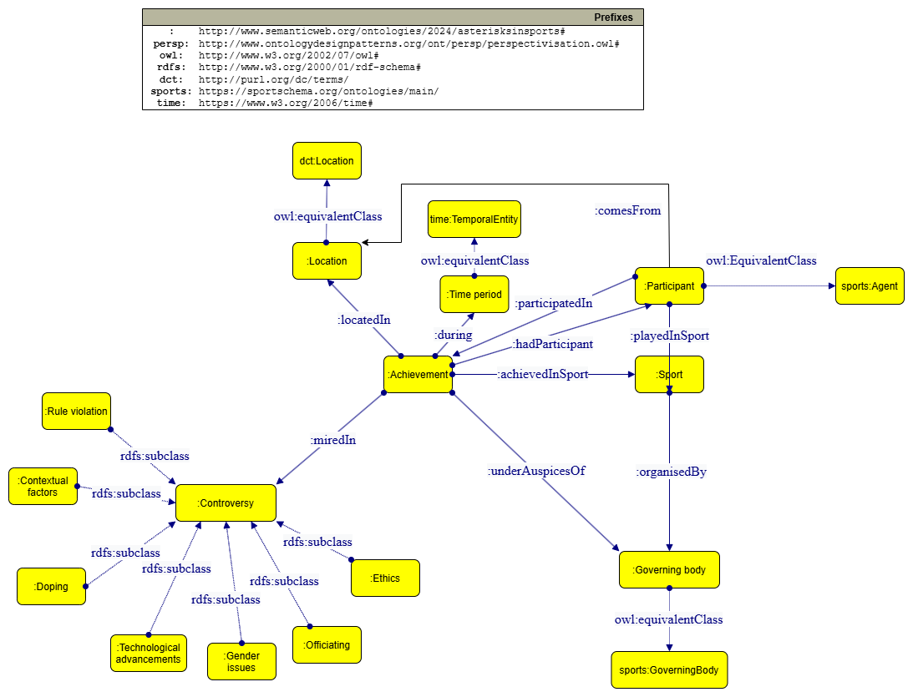
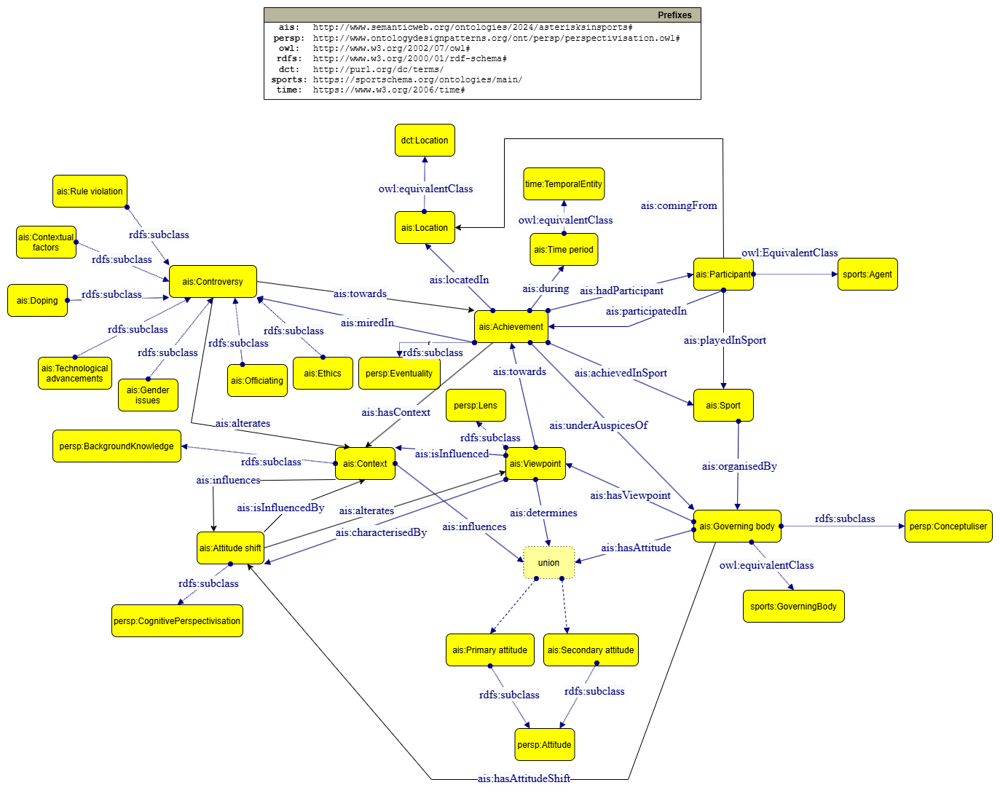

1 - Overview
Asterisks as semantic markers
The presence of an asterisk beside a title signifies more than just a footnote; it encapsulates various interpretations and judgments regarding the legitimacy of a championship. It is essential to consider what the asterisk represents semantically:
- Contested Validity: The asterisk implies that the victory is not fully legitimate or that there are conditions that complicate its acceptance. This needs to be articulated in the ontology by defining categories for types of legitimacy (e.g., ethical, procedural, contextual).
- Cognitive and Ethical Dimensions: The differing perspectives regarding a victory (such as those of players, fans, and officials) should be captured. This involves recognizing that each stakeholder’s perspective can contribute to the meaning of the title.
Identifying key concepts and relationships
Key concepts:
- Title: the achievement or championship being contested.
- Asterisk: A marker indicating dispute or controversy.
- Legitimacy: The validity of the title in light of rules, ethics, and context.
- Rule interpretation: How rules are understood and applied in practice.
- Perspectives: The differing views held by stakeholders (eg. players, officials, fans).
Relationships:
- Titles and asterisks: A title can either have or lack an asterisk based on the legitimacy debate.
- Legitimacy and perspectives: The legitimacy of a title is dependent on the perspectives of different stakeholders.
- Rule interpretation and legitimacy: how rules are interpreted can influence the perceived legitimacy of a title.
1.1 - Outline
This project aims to delineate the concepts associated with asterisks in sports—symbols of disputed titles perceived as lacking full legitimacy. It seeks to explore the meanings of terms, concepts, and classifications linked to titles, rules, and controversies marked with an asterisk.
The project is a deliverable for the Knowledge Representation and Knowledge Extraction class, held by Prof. Aldo Gangemi as a part of the Masters course in Digital Humanities and Digital Knowledge at Unibo, 2024.
Team members and their contributions:
Rubens Fernandes Junior - modelling and collection of the dataset
Hubert Krzywonos - the front-end presentation of the project,
Carla Menegat - research into the theoretical framework, overview, outline and methodology of the project
1.2 - Asterisks in sports - examples
Following is a list of the examples we decided to work with, categorised manually by what we deemed as the reason for the existence of the asterisk.
A. Doping / Chemical Performance Enhancement
- Example: Lance Armstrong - Tour de France titles
- Context: Armstrong was stripped of his seven Tour de France titles due to doping violations.
- Example: Bjarne Riis - Tour de France title
- Context: Bjarne Riis admitted to doping in his 1996 TdF win, leading to stripping of the title in 2007, however it was reinstated with an official asterisk one year later.
- Example: Ben Johnson/Carl Lewis - 1988 Olympic Gold Medal in 100m
- Context: Johnson was disqualified after testing positive for steroids. The following winner, Carl Lewis, was tested positive for multiple substances (eg. pseudoephedrine), however changing limits made his testing results negative.
- Example: State-run doping
- Context: Most famous cases include Russia in 21st century, leading to the athletes (only those without previous doping violations) being forced to represent the National Olympic Committee at the Olympic Games, and East Germany from 1965 until the reunification in 1991 (only ever resulted in one official doping ban).
B. Bending or Violating Rules
- Example: New Orleans Saints - "Bountygate" scandal
- Context: The team was involved in a pay-for-performance scheme encouraging players to injure opponents, casting doubts on their Super Bowl title.
- Example: Diego Maradona - "Hand of God" (1986 World Cup)
- Context: Maradona scored a controversial goal using his hand in the quarter-final match against England, leading to ongoing debates about the legitimacy of Argentina's title.
- Example: Houston Astros 2017 World Series
- Context: Astros were running a sophisticated electronic sign stealing system to determine the kinds of throws a rival pitcher would perform.
- Example: Olympic (and other youth) football
- Context: The Olympic Games have had varied eligibility rules regarding players called up for the football tournament. Two most notable periods are national amateur teams in 1952-80 (dominated by Eastern Bloc countries, where footballers were nominally employed as regular workers in factories/mines/etc.) and post-1992 Under-23 rules (raising eyebrows as developing countries, especially Nigeria and Cameroon, being unable to transfer this and other youth successes into age-unrestricted tournaments).
C. Controversial Officiating
- Example: 2015 Women's World Cup Final - Japan vs. USA
- Context: Several disputed officiating decisions, including a controversial penalty, led to debates over the fairness of Japan's title.
- Example: 1990 World Series - Oakland Athletics vs. Cincinnati Reds
- Context: The A's faced criticism for perceived inconsistencies in umpiring, with debates over the legitimacy of their win.
- Example: 1998 Polish Cup Final - Aluminium Konin vs. Amica Wronki
- Context: The match featured many officiating mistakes in favour of Amica, with the 15-minute break between halves being prolonged, as it later turned out, so the teams could counter-offer each other bribes. Commentators also insinuated as much during the live transmission.
- Example: 2009 Champions League Semifinal - Chelsea vs. Barcelona
- Context: The referee failed to award Chelsea multiple penalties, resulting in the club being eliminated on now-scrapped away goals rule, and now iconic moments of him being chased the length of the pitch by Michael Ballack, and post-game antics including Didier Drogba shouting "A f*****g disgrace" to a live camera. He (the referee) later admitted it was not his best day in the office.
D. Technological Advancements
- Example: Swimming - one-piece suits
- Context: Michael Phelps’s record-breaking performances were partly attributed to the high-tech swimsuits used at the time, leading to discussions about the impact of technology on legitimacy.
- Example: Cycling - Bikes
- Context: UCI-compliant bikes have a standard weight to adhere to. They are subject for inspections, however this is not a standard procedure, theoretically allowing use of engines to increase the wattage output during critical times of a race, for example during difficult ascends, which have seen a significant number of record-breaking times in recent years.
- Example: Simon Ammann - 2009/10 ski jumping season
- Context: Ski jumping is internally known to be partly a technological arms race, and there was no season when it was more apparent than 2009/10, when Simon Ammann won both individual gold medals at the Vancouver Olympics, Ski Flying World Championship gold and the World Cup with 9 wins and 16 top-3 finishes in 23 competitions thanks to changes in ski bindings, allowing him to transition from take-off to flight phase faster than anyone else.
- Example: Oscar Pistorius - 2008 Summer Olympics
- Then famous for wanting to become an Olympian and Paralympian at the same time, use of his prosthetic legs of carbon fiber blades resulted in a dispute involving scientific studies and counter studies. He won three gold medals at the Paralympics and failed to qualify for the Olympics by 0.7 seconds in a 400m run.
E. Ethical Considerations
- Example: Tonya Harding - 1994 Winter Olympics
- Context: Harding's involvement in the attack on Nancy Kerrigan led to ongoing debates about the ethics surrounding her participation and subsequent titles.
- Example: 1996 NBA Finals - Chicago Bulls
- Context: Michael Jordan's "Flu Game" raised questions about the ethics of performance during adversity.
- Example: Titles from pre-modern sports
- Context: Athletes like Jim Thorpe had their titles temporally or permanently rescinded due to amateurism rules.
- Example: Olympic titles in the early 20th century
- Context: Our standards of sportsmanship and amateur status have changed since the beginning of the modern Olympic era. Additionally, advancements in technique, technology and results result in the ever-growing pinches of salt when looking back in time.
F. Gender and Eligibility Issues
- Example: Caster Semenya - 800m Olympic Titles
- Context: Semenya's eligibility has been challenged based on her testosterone levels, leading to ongoing discussions about the legitimacy of her titles.
- Example: 2016 Olympic Games - Transgender Athlete Participation
- Context: The inclusion of transgender athletes led to disputes about eligibility and fairness in competition, results notwithstanding.
- Example: Christine Mboma - Tokyo 200m silver medal
- Context: An extension of the previously memntioned Caster Semenya case, Mboma's testosterone levels have been found to be above accepted limits after capturing her Olympic medal. It has not been rescinded, but she is currently not permitted to start in IAAF-sanctioned international events.
- Example: Ewa Kłobukowska
- Context: A Polish sprinter, Olympic and European champion and a 100m world record holder, Ewa Kłobukowska was forced to retire from competition in 1967 after sporting officials from Germany and USSR filed a denuncation to IAAF regarding her chromosome configuration. She gave birth to a son next year.
G. Contextual Factors
- Example: MLB Steroid Era
- Context: Many home run titles and records from the late 1990s and early 2000s are viewed with skepticism due to widespread steroid use.
- Example: NBA Championships during lockouts
- Context: Titles won during shortened seasons (eg. 1999 Spurs, 2012 Heat) are sometimes viewed differently due to the unique circumstances of those seasons.
- Example: Zagłębie Lubin 2006/07 Polish championship
- Context: Zagłębie won the championship in this season, though in later years, it's players were found guilty of buying matches and the club itself was penalised with relegation. The championship was never rescinded, and the fans of the club did not vote for any of the players from the club's best season ever to be in their all-time best squad.
- Example: The Sunday of Miracles - 1992/93 Polish championship
- Example: Legia Warsaw, ŁKS Łódź and Lech Poznań fought for the national championship. Before the last round of matches, Legia led from ŁKS on goal difference, with Lech three points behind in third. In the last round, ŁKS played Olimpia Poznań, and Legia played Wisła Kraków. Both teams won their matches by wide margins (ŁKS 7–1, Legia 6–0), which raised suspicions of corruption. Although neither Legia nor ŁKS was found guilty, the Polish Football Association (PZPN) decided to cancel the results of the matches of both teams and award the championship to Lech Poznań.
1.3 - Theoretical framework
In the world of competitive sports, certain championships are often marked with an “asterisk,” indicating a contested or disputed victory. These titles, whether questioned due to rule violations, ethical concerns, or contextual anomalies, invite complex debates about legitimacy. This project applies a perspectivist framework to analyze how various stakeholders—athletes, officials, and fans—interpret these disputes. Perspectivism, the philosophical view that truth is relative to one’s perspective, offers a productive lens for understanding the multiplicity of views surrounding disputed titles. By integrating insights from Graham McFee’s philosophy of sport (2004) and formalist, conventionalist, and internalist theories (McArdle,2015), we explore how cognitive and moral interpretations shape the meaning of an asterisked title.
Perspectivism and the Nature of Role Interpretation
In sports, rules play a constitutive role, defining the parameters of competition. However, as McFee highlights, rule-following is not purely deterministic but occasion-sensitive—requiring interpretation based on the context of the game. This mirrors the perspectivist view that objective truth is elusive, and different actors may interpret rules differently based on their situation and role in the sport.
Disputed titles, such as those involving performance-enhancing drugs or controversial officiating decisions, exemplify the fluidity of rule interpretation. In some instances, formalist approaches would dictate that any violation of the rules should nullify a victory. However, as perspectivism suggests, not all stakeholders (Agents) may see the issue in the same way. For some, the context—such as widespread doping or unclear rules—may justify or mitigate the perceived violation, leading to a view that the achievement, though marked, remains valid. The asterisk, in this sense, symbolizes a multiplicity of interpretations that coexist without definitive resolution.
The Ethics of Fair Play and Competitive Integrity
McFee emphasizes the moral dimensions of sport, particularly the concept of fairness, which is central to the legitimacy of any championship. In line with internalist theories of sport, ethics are seen as intrinsic to the practice itself, guiding both conduct and judgment within a competition. The addition of an asterisk to a title reflects an ethical dispute over whether the victory aligns with the internal values of fairness, sportsmanship, and respect for the rules.
From a perspectivist viewpoint, the ethical implications of a disputed title are not universal but contingent on how different groups understand fairness. For instance, fans and officials may debate whether athletes like Lance Armstrong, whose achievements were later clouded by doping allegations, truly undermined the spirit of fair competition. One perspective might hold that Armstrong’s titles are illegitimate, while another could argue that given the widespread culture of doping at the time, his victories are relatively justifiable. The asterisk thus denotes the coexistence of these divergent ethical evaluations.
Rules, Context and Competitive Excellence
Formalism in sport theory suggests that strict adherence to rules is central to the nature of sport. However, McFee and broader internalist perspectives argue that rules are not always sufficient to capture the essence of competitive excellence. Cognitive engagement in sports involves interpreting the purpose behind the rules and applying them in a way that promotes the game’s underlying values, such as skill, effort, and mutual striving for excellence.
In the context of disputed titles, perspectivism reveals that stakeholders may interpret a champion’s performance differently based on their cognitive and contextual understanding of the rules. For example, if an athlete won under controversial conditions, such as exploiting a loophole or benefitting from a questionable officiating decision, formalists might insist the victory is invalid. However, internalists and perspectivists might argue that if the athlete displayed superior skill and effort, the win remains a valid display of excellence, albeit with an asterisk to reflect the contentious circumstances.
The Asterisk as a Marker of Interpretive Flexibility
The concept of the asterisk in sports serves as a powerful symbol of perspectivism. It indicates that the victory is open to multiple interpretations and that there is no single, definitive truth about its legitimacy. This aligns with McFee’s view that sporting rules often require interpretation and that context and occasion play key roles in how we apply and understand these rules. The asterisk reflects the tension between formalist approaches, which demand strict rule adherence, and more interpretive approaches, which consider broader ethical and contextual factors.
In cases like the 2002 Olympic figure skating scandal or controversies over transgender athletes’ participation, the asterisk reflects an ongoing debate between competing perspectives on fairness, inclusivity, and competitive integrity. Each perspective brings valid cognitive and moral concerns to the table, but no single view holds absolute authority. The perspectivist approach thus acknowledges the cognitive complexity of sports and the multiplicity of views involved in disputes over titles.
Social Conventions and Collective Judgment in Sporting Disputes
As the Stanford Encyclopedia of Philosophy highlights, conventionalist theories of sport recognize that social conventions and unwritten norms are as important as formal rules in shaping how sports are played and judged. Perspectivism intersects with this view by suggesting that societal and cultural norms heavily influence how we interpret disputed titles.
For example, in sports where doping was rampant, collective judgments about individual athletes may vary depending on the cultural context of the time. A title won under such conditions might be deemed less legitimate in hindsight, but contemporaries might have viewed it as acceptable, given the widespread use of enhancement practices. The asterisk becomes a marker of this shift in social conventions, showing how cognitive frameworks of sports evolve over time and how collective judgments are never static.
1.4 - Methodology
a. Ontology-Driven Cognitive Framework Design
The first step is to define an ontology-based cognitive framework. An ontology is essential for formalizing the relationships between concepts like “asterisks,” “sports achievements,” “athlete performance,” and “controversies.” Using an ontology allows for a structured exploration of the cognitive and cultural dimensions associated with asterisks in sports.
Step 1: Determine the Domain and Scope
Using Noy and McGuinness’s guidelines for ontology development:
- Domain: The domain is sports records and achievements, specifically focusing on instances where asterisks are used to mark these records.
- Scope: The ontology should capture the different interpretations, implications, and controversies surrounding the use of asterisks in sports. The goal is to formalize the reasons asterisks are applied, such as doping, rule changes, or shortened seasons, and how they impact public perception.
Step 2: Identify Competency Questions
Competency questions are crucial in guiding the structure of the ontology. These are the questions that the ontology should help answer. For example:
- “What are the common reasons for applying an asterisk to a sports achievement?”
- “How do different sports bodies justify the use of asterisks?”
- “What are the public and athlete responses to records marked with asterisks?”
These questions drive the development of the framework by identifying key concepts and relationships that need to be represented.
Step 3: Reuse or Develop New Ontologies
Using pre-existing ontologies where applicable helps speed up the process. For example, you may import relevant ontologies concerning ethics in sports, fairness, or historical record-keeping. If no suitable ontology exists, new classes such as “asterisk,” “sports organization,” “controversy,” “doping,” etc., should be created to categorize the different factors that play into the cognitive perception of asterisks.
Step 4: Modular Design and Pair Development
Following the principles of eXtreme Design (XD), the ontology should be developed in modules. The task can be divided among team members who work in pairs. One pair can focus on modeling the cognitive perception of fairness in sports, while another can develop modules on ethical considerations or the media’s role in shaping opinions.
a. Iterative Workflow and Testing
Building the cognitive framework should be an iterative, incremental process. According to eXtreme Design guidelines, the project should be organized into iterations. Each iteration should follow these steps:
Task 1: Collect Stories and Examples
Gather cases where asterisks have been used in sports, such as Barry Bonds’ home run record or the 2020 NBA season. These real-life examples provide the content for competency questions and help refine the structure of the ontology.
Task 2: Transform Cases into Cognitive Queries
Each case should be transformed into a set of questions that can be answered using the ontology. For instance, “What is the public’s perception of an athlete’s achievements when they are marked with an asterisk due to performance-enhancing drugs?” These queries help shape the cognitive model and guide data collection.
Task 3: Pattern Matching with Content Ontology Design Patterns (CPs)
Match each cognitive query with relevant design patterns from existing ontologies, where available. Reuse these patterns where applicable to ensure a modular design that can be easily extended.
Task 4: Integration, Testing, and Refinement
The developed modules should be tested against real-world cases to ensure they accurately model the relationships and cognitive responses. Testing can involve running competency questions in a SPARQL query format to see if the ontology correctly returns expected results based on known facts. This iterative process will help refine the model and ensure it accurately captures the nuances of asterisks in sports.
b. Analysis of Domain Knowledge and Results
Once the cognitive framework has been established, it can be used to analyze the impact of asterisks on sports narratives and perceptions. The ontology will provide a formalized structure for comparing cases, identifying patterns in the use of asterisks, and drawing conclusions about their effects on sports culture and athletes’ legacies.
In conclusion, by following an ontology-driven and iterative development process based on cognitive frameworks, this research will provide a structured way to investigate the meaning, application, and cultural impact of asterisks in sports. Using modular design, competency questions, and iterative testing ensures that the framework can adapt and expand as new cases and insights emerge.
2 - Knowledge representation
We decided to use a two-level modelling strategy for the creation of the ontology representing sporting controversies. This involves two different levels:
1. A model representing the events in question, and their surrounding controversies.
2. A model representing the differing perspectives of the followers of said events.
The second level will be progressively build on top of the first to create a representation that's both detailed and comprehensive.
2.1 - First-level modelling
2.1.1 - Competency questions
Development of the basic ontology started with preparing some competency questions, which we would expect to be answered. Prefixes added to SPARQL queries:
PREFIX ais: <http://www.semanticweb.org/ontologies/2024/asterisksinsports>
PREFIX sports: <https://sportschema.org/ontologies/main/>
PREFIX dct: <http://purl.org/dc/terms/>
PREFIX time: <https://www.w3.org/2006/time#>
PREFIX xsd: <http://www.w3.org/2001/XMLSchema#>
The competency questions are provided with corresponding SPARQL queries:
What are some recent examples of sporting controversies?
SELECT ?achievement ?controversyType
WHERE {
?achievement ais:miredIn ?controversyType.
?achievement ais:during ?timePeriod.
?timePeriod time:after "2000-01-01"^^xsd:date.
}
What examples of controversies do we know happened in a specific sport, e.g. ski jumping?
SELECT ?achievement ?controversyType
WHERE {
?achievement ais:miredIn ?controversyType.
?achievement ais:achievedInSport ?sport.
?sport ais:named "Ski jumping"^^xsd:string.
}
What are some sportspeople who had their titles challenged because of doping?
SELECT ?achievement ?controversyType ?sportsperson
WHERE {
?achievement ais:miredIn ?controversyType.
?controversyType ais:named "Doping"^^xsd:string.
?achievement ais:hadParticipant ?sportsperson.
}
What controversies arose in competitions organised by the Polish Football Association?
SELECT ?achievement ?controversyType
WHERE {
?achievement ais:miredIn ?controversyType.
?achievement ais:achievedInSport ?sport.
?sport ais:organisedBy ?governingBody.
?governingBody ais:named "PZPN"^^xsd:string.
}
What sporting controversies arose in the United States?
SELECT ?achievement ?controversyType
WHERE {
?achievement ais:miredIn ?controversyType.
?achievement ais:locatedIn ?location.
?location ais:named "United States"^^xsd:string.
}
Are technological advancements leading to controversies in multiple sports?
SELECT DISTINCT ?sport ?achievement
WHERE {
?achievement ais:miredIn ?controversyType.
?controversyType ais:named "Technological advancements".
?achievement? ais:achievedInSport ?sport.
}
Is an athlete's gender leading to controversies regarding their sporting achievements a modern phenomenon?
SELECT ?achievement ?controversyType ?timePeriod
WHERE {
?achievement ais:miredIn ?controversyType.
?controversyType ais:named "Gender"^^xsd:string.
?achievement ais:during ?timePeriod.
}
2.1.2 - Classes and properties
Classes
- Achievement
Represents a sporting accomplishment made by a sportsperson or a group of sportspeople. This ranges from winning championship titles, through outstanding performances and breaking records to just qualifying to participate at a certain event.
- People
This entry can be divided into Participant and NonParticipant for further modelling purposes. Participant is a representation of a specific sportsperson, or a group of sportspeople participating in a club or representing their nation, while NonParticipant represents people not directly participating in the sporting events, such as fans.
- ControversyType
Represents the type of controversy surrounding a sporting achievement as defined in section 1.2, that is:
- Doping for improving performance through illicit chemicals.
- RuleViolation for violating the ruleset of the sport or competition.
- Officiating for controversial officiating or officiating mistakes made during the competition.
- Technology for technological advancements impacting the result of the sporting competition.
- Ethics for cases, where ethical considerations have made an impact on the view of an achievement.
- Gender, where the athletes gender was brought up as a reason to invalidate their achievements.
- ContextualFactors for cases, where the legitimacy of an achievement has been challenged due to factors outside of the actual sporting results.
- Sport
Represents the sport, in which an Achievement has been made in.
- GoverningBody
Represents the governing body, under whose auspices the event was run, in which an Achievement has been made in.
- Location
Represents the singular physical location (if possible), or a broader geographical context, where an Achievement has taken place.
- TimePeriod
Represents the timeframe, when an Achievement has taken place.
- Provenance
Represents the provenance of People.
- ElementOfControversy
Represents an element, that has created controversy regarding a certain Achievement
Properties
- hadParticipant (Achievement -> Participant)
Links a sporting accomplishment to a sportsperson or sportspeople.
- participatedIn (Participant -> Achievement)
An inverse of the previous property, links a sportsperson or sportspeople to their sporting accomplishment
- miredIn (Achievement -> ControversyType)
Links a sporting achievement to a type of controversy surrounding it.
- achievedInSport (Achievement -> Sport)
Links a sporting accomplishment to the sport it was achieved in.
- playedInSport (Participant -> Sport)
Links a sportsperson or sportspeople to a sport in which they participated in.
- underAuspicesOf (Achievement -> GoverningBody)
Links a sporting accomplishment to the governing body, under which auspices it was achieved in.
- organisedBy (Sport -> GoverningBody)
Links a sport to a governing body, which organises events.
- locatedIn (Achievement -> Location)
Links a sporting accomplishment to a geographical location or region it was achieved in.
- during (Achievement -> TimePeriod)
Links a sporting accomplishment to a time period it was achieved in.
- comesFrom (People -> Provenance)
Links a participant or a non-participant to a place, from which they come from.
- createdBy (ControversyType -> ElementOfControversy)
Links an element of controversy to the type of controversy it caused.
2.1.3 - Basic ontology creation
A WebVOWL visualisation also available here.
The visualisation shows the basic ontology capturing the core concepts and relationships in relation to sports and the surrounding controversies. Through sports:, the created ontology is linked to another representation of sporting events. We believe that breaking down the types of controversies into several smaller groups is necessary to facilitate understanding of the underlying issues of why some sporting achievements are viewed at negatively, and thus expect the relations between them and NonParticipants to be one of the focal points of the next part of modelling.
The basic ontology is available here.
2.2 - Second-level modelling
2.2.1 - Perspectivisation competency questions
Before starting work on an expanded ontology including perspectivisation, we prepared another set of competency questions, which we would expect to be answered. Prefixes added to SPARQL queries:
PREFIX ais: <http://www.semanticweb.org/ontologies/2024/asterisksinsports>
PREFIX perspectivisation: <http://www.ontologydesignpatterns.org/ont/persp/perspectivisation.owl#>
PREFIX sports: <https://sportschema.org/ontologies/main/>
PREFIX dct: <http://purl.org/dc/terms/>
PREFIX time: <https://www.w3.org/2006/time#>
PREFIX xsd: <http://www.w3.org/2001/XMLSchema#>
What factors lead to changes in attitude towards a controversial sporting achievements, e.g. Bjarne Riis' 1996 TdF win?
SELECT ?attitudeShift ?viewpoint ?context
WHERE {
?person ais:hasViewpoint ?viewpoint.
?viewpoint ais:characterisedBy ?attitudeShift.
?viewpoint ais:determines ais:secondaryAttitude.
?viewpoint ais:towards ?achievement.
?viewpoint ais:isInfluenced ?context.
?context ais:influences ais:secondaryAttitude.
?achievement ais:named "100m women's world record"^^xsd:string.
}
2.2.2 - New classes and properties
Classes
- Viewpoint
Represents a perspective of an individual towards a sporting achievement.
- PrimaryAttitude/SecondaryAttitude
Represent different outlooks towards a sporting achievement.
- Context
Represents context and a plethora of external factors (e.g. media coverage, personal knowledge, cultural and moral values) influencing outlooks on a sporting achievement.
- AttitudeShift
Represents a personal shift of attitute regarding a sporting achievement.
Properties
- hasViewpoint (People -> Viewpoint)
Links a person to their viewpoint on a sporting achievement.
- hasAttitude (People -> PrimaryAttitude/SecondaryAttitude)
Links a person to their viewpoint towards a sporting achievement.
- isInfluenced (Viewpoint -> Context)
Links a person's viewpoint on a sporting achievement to personal context.
- influences (Context -> PrimaryAttitude/SecondaryAttitude)
Links personal context to a person's attitude towards a sporting achievement.
- determines(Viewpoint -> PrimaryAttitude/SecondaryAttitude)
Links a person's viewpoint on a sporting achievement to their attitude towards it.
- towards(Viewpoint -> Achievement)
Links a person's viewpoint towards a sporting achievement to said sporting achievement.
- characterisedBy (Viewpoint -> AttitudeShift)
Links a personal viewpoint towards a sporting achievement to potential shifts in attitude impacting the viewpoint.
2.2.3 - Aligning ontologies
| Achievement | Eventuality |
|---|---|
| Achievement represents "eventuality" in being a situation that occurred as a result of a (or multiple of) sporting event. A sporting achievement can be observed and described through various lenses, and the interpretation of it depends on the perspective of a viewer. | Situation or event being described. Can be viewed through different lenses to produce different perspectives, extracted from background knowledge. |
| Viewpoint | Lens |
|---|---|
| A viewpoint represents a perspective, through which a sporting achievement is viewed, of (non-)participants of a sporting event, which led to an achievement. | Perspective or a contextual framework through which an eventuality is viewed, described and interpreted. |
| PrimaryAttitude/SecondaryAttitude | Attitude |
|---|---|
| Stance of the (non-)participants to a sporting achievement. It could be represented as PositiveAttitude/NegativeAttitude instead, but we believe that differentiation into Primary and Secondary would be better suited to accomodate AttitudeShift. | Stance of the conceptualisers regarding a perceived eventuality through a specific lens. |
| Context | Background |
|---|---|
| Contextual information, media coverage, personal knowledge and other information relating to a sporting achievement. | Information, context, knowledge and understanding used to interpret an eventuality. |
| AttitudeShift | Cut |
|---|---|
| A change in the perception of a sporting achievement. | A new perspective emerging when an eventuality is reinterpreted. |
2.2.4 - Second-level ontology
A WebVOWL visualisation of the second-level ontology is available here.
The ontology is available here.
3 - Knowledge extraction
intro
3.1 - Dataset
Translation of the examples into a csv file
Idea to think about - provide final classes and properties to chatgpt and ask it to provide new ones, then try to double check it
3.2 - Knowledge graph
Load up the ontology in Protege
Merge it with the dataset
Show some results ig, like the results of the queries of the competency questions, come up with some new ones?
4 - Conclusions
What we wanted to do
What we managed to do
What we did not manage to do
4.1 - Further development
Perspectives for further development ig
5 - Bibliography
Agafonova, R. (2021). Global Maradona: Man, athlete, celebrity, idol, hero, myth. “Proud, rebel, political”: How Maradona influenced football governance. Eracle. Journal of Sport and Social Sciences, 4(2). ISSN 2611-6693.
Gangemi, Aldo, and Presutti, Valentina. "Formal Representation and Extraction of Perspectives", in Creating a More Transparent Internet, The Perspective Web, pp. 208-228, Cambridge University Press, April 2022.
McArdle, D. (2015). Dispute resolution in sport: Athletes, law and arbitration. Routledge.
McFee, G. (2004). Sport, rules, and values: Philosophical investigations into the nature of sport. Routledge.
“Philosophy of Sport.” (2020). Stanford Encyclopedia of Philosophy. https://plato.stanford.edu/entries/sport/
Nosal, P., Kossakowski, R., & Woźniak, W. (Eds.). (2024). Football, fandom and collective memory: Global perspectives. Routledge.
Tamir, I., & Bar-Eli, M. (2021). The moral gatekeeper: Soccer and technology, the case of video assistant referee (VAR). Frontiers in Psychology, 11, Article 613469. https://doi.org/10.3389/fpsyg.2020.613469
van Kleef, R. (2014). The legal status of disciplinary regulations in sport. International Sports Law Journal, 14(1), 24–45. https://doi.org/10.1007/s40318-013-0035-z
Natalya F. Noy and Deborah L. McGuinness, "Ontology Development 101: A Guide to Creating Your First Ontology," Stanford University, Knowledge Systems Laboratory Technical Report, 2001.
Valentina Presutti, Enrico Daga, Aldo Gangemi, and Eva Blomqvist, "Extreme Design with Content Ontology Design Patterns," Semantic Technology Laboratory, ISTC-CNR.